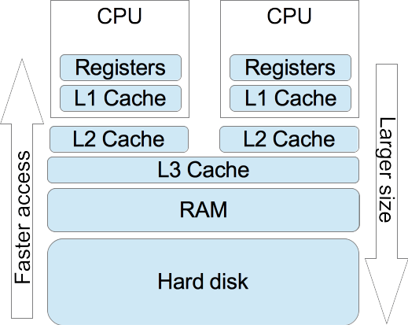
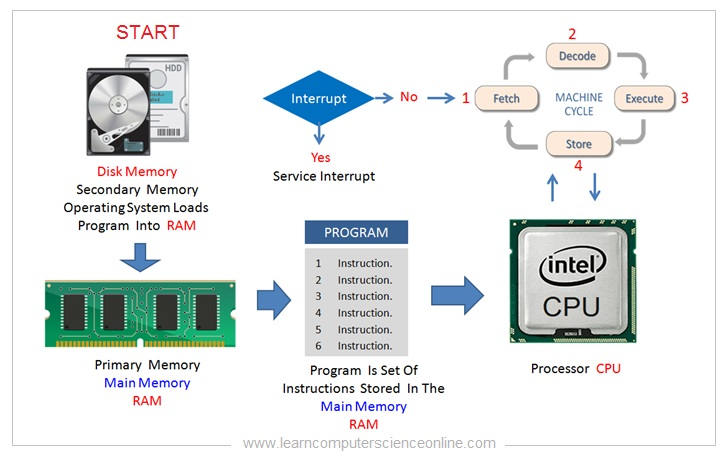
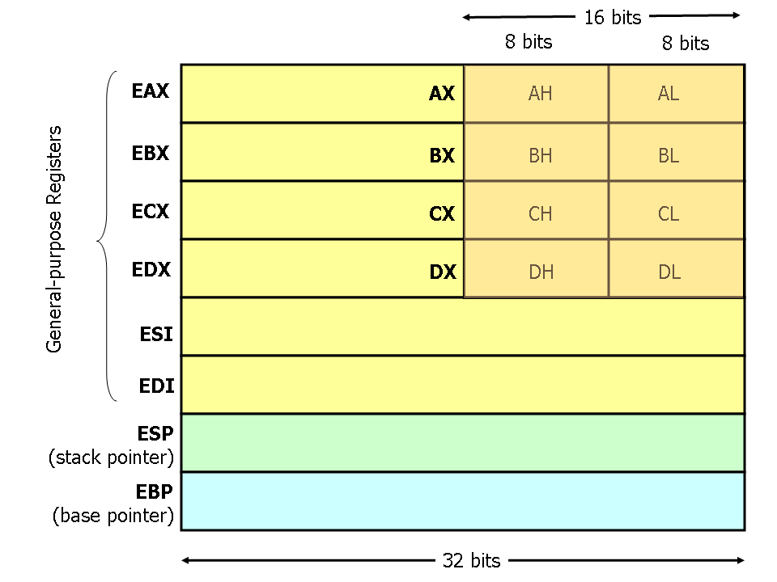
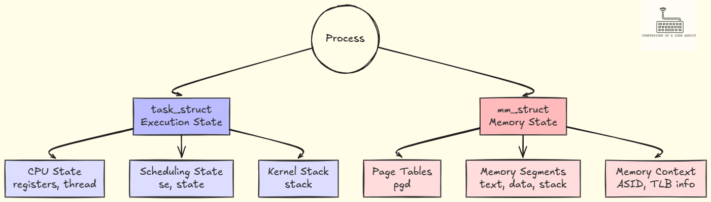
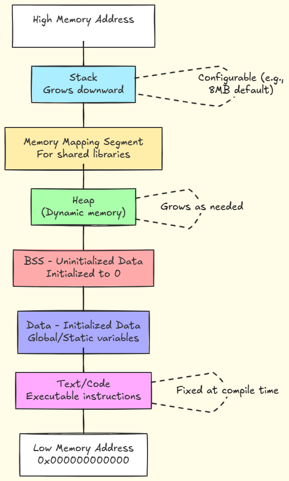

Arquitectura de computadoras, organización de procesos, la pila y GDB
/*
* phoenix/stack-zero, by https://exploit.education
*
* The aim is to change the contents of the changeme variable.
*/
#include <stdio.h>
#include <stdlib.h>
#include <string.h>
#include <unistd.h>
#define BANNER \
"Welcome to " LEVELNAME ", brought to you by https://exploit.education"
char *gets(char *);
int main(int argc, char **argv) {
struct {
char buffer[64];
volatile int changeme;
} locals;
printf("%s\n", BANNER);
locals.changeme = 0;
gets(locals.buffer);
if (locals.changeme != 0) {
puts("Well done, the 'changeme' variable has been changed!");
} else {
puts(
"Uh oh, 'changeme' has not yet been changed. Would you like to try "
"again?");
}
exit(0);
}

Fuente: heronyang.com


Fuente: CS 216 Virginia

Fuente: codingconfessions.com

Fuente: codingconfessions.com
Read-Only). Modificarlo directamente provoca un Segmentation Fault.malloc / calloc).file stack-zero gdb -q stack-zero info functions break main disassemble main run break *0x400601 break *0x40060c define hook-stop info registers x/24wx $rsp x/2i $rip end step instruction # Usar 16 'A's e inspeccionar la pila restart run # Usar 16 'A's y 16 'B's # Cambiar cada 16 letras y repetir hasta desbordar quit
everything is open source if you know how to read assembly.